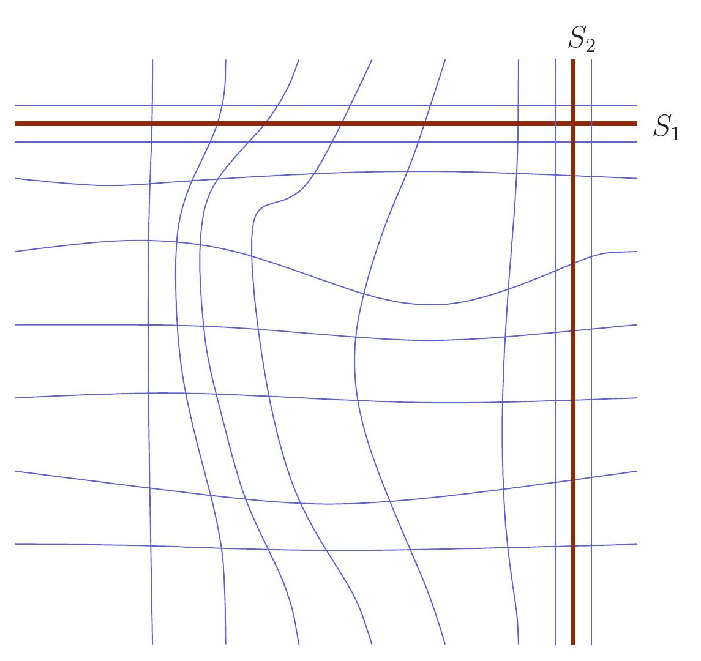

Dirty hands seminar (Fall/Winter 2026)

The goal of this seminar is to get acquainted with the essential techniques of closed pseudoholomorphic curves in closed symplectic 4-manifolds and to understand how these techniques are used to prove the foundational theorems of symplectic topology due to Gromov and McDuff, from a somewhat more modern point of view.
In particular, we want to understand how holomorphic curves can be used to recognize rational and ruled symplectic 4-manifolds, the behaviour of exceptional spheres under deformation, and the symplectic analogue of Castelnuovo's criterion.
Our main reference will be Wendl's book on Holomorphic Curves in Low Dimensions and a the following preliminary schedule.
If you wish to participate in the seminar please don't hesitate to contact Vincent Humilière; Rusell Avdek; Nikolas Adaloglou; Johannes Hauber or Luis Zegarra
Schedule
Week 1 — Introduction
Topic: Pseudoholomorphic curves and rational and ruled surfaces.
Speaker: Johannes Hauber
Week 2 — Gromov's theorem on ruled surfaces
Topic: Holomorphic foliations of \(S^2 \times S^2\).
Speaker: ...
Week 3 — Exceptional spheres
Topic: Why exceptional curves cannot break under deformation.
Speaker: ...
Week 4 — Symplectic blow-down
Topic: The symplectic analogue of Castelnuovo's criterion.
Contacts
If you wish to participate in the seminar don't hestitat Holomorphic Curves in Low Dimensions .
C. Wendl, Holomorphic Curves in Low Dimensions .
Further references will be added during the seminar.